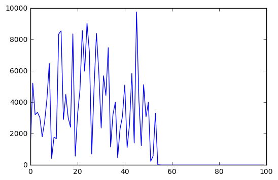
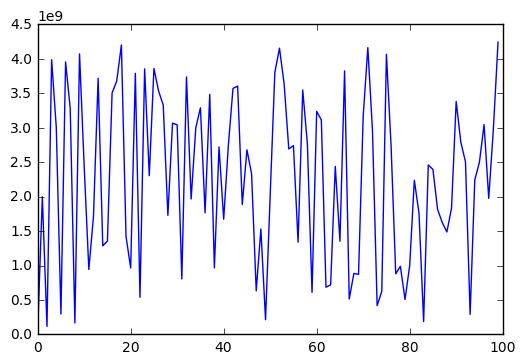
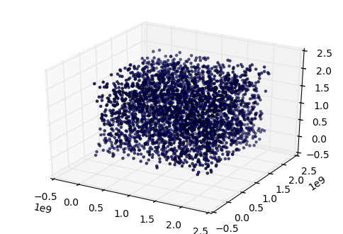
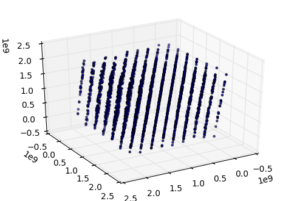

Języki skryptowe Python
Wykład 10
Generatory liczb pseudolosowych
- nie jest możliwe wygenerowanie liczby prawdziwie losowej
- możliwe jest wygenerowanie (na bazie liczby wejściowej, seed) ciągu liczb pseudolosowych
- ten sam seed = ten sam ciąg
- maksymalna ilość ciągów = możliwe seedy
- okresowość
Middle square method

- stworzony przez Johna von Neumanna
- Wykorzystany w
- ENIAC (jeden z pierwszych komputerów na świecie)
- Projekt Manhattan
Middle square method - algorytm
- weź liczbę 4-cyfrową jako seed (w ogólności można wziać n-cyfrową liczbę)
- podnieś do kwadratu, aby otrzymać liczbę 8-cyfrową (dodaj zera, jeśli trzeba)
- 4 środkowe cyfry są wynikiem i seedem dla następnej liczby
\[1111^2 = 01234321 \rightarrow 2343\] \[2343^2 = 05489649 \rightarrow 4896\] \[4896^2 = 23970816 \rightarrow 9708\]
Middle square method - implementacja
middle2.py
"""PRNG using middle-square method."""
def _middle2(n):
"""Return next random number."""
return int(str(n*n).zfill(8)[2:6])
def generate(n, seed=1111):
"""Generate n numbers starting with seed."""
numbers = []
for _ in range(n):
numbers.append(seed)
seed = _middle2(seed)
return numbersMiddle square method - wyniki
import matplotlib.pyplot as plt
import middle2
size, seed = 100, 1234
x = range(size)
y = middle2.generate(size, seed)
plt.plot(x, y)
Algorytm LCG
- LCG = linear congruential generator
- zaimplementowany w wielu językach
- prosty i szybki
- silne korelacje - nie nadaje się do symulacji Monte Carlo (i tym bardziej kryptografii)
\[X_{n+1} = (aX_n + c) \text{ mod } m\]
Algorytm LCG - implementacja
import matplotlib.pyplot as plt
def lcg(seed, m, a, c):
"""Return next random number using LCG."""
return (seed * a + c) % m
size, seed = 100, 1234
a, c, m = 48271, 0, 2**32 - 1 # C++11 minst_rand
random_numbers = []
for _ in range(size):
seed = lcg(seed, m, a, c)
random_numbers.append(seed)
x = range(size)
plt.plot(x, random_numbers)
Algorytm LCG - korelacje
# Mathematics and Computers in Simulations 46 (1998) 485-505
seed = 1
a = 65539
c = 0
m = 2**31
punkty = [] # losowe punkty
for _ in range(9600):
seed = lcg(seed, m, a, c)
punkty.append(seed)
x = punkty[::3] # współrzędne x
y = punkty[1::3] # współrzędne y
z = punkty[2::3] # współrzędne zAlgorytm LCG - punkty 3D
import matplotlib.pyplot as plt
from mpl_toolkits.mplot3d import Axes3D
from time import sleep
fig = plt.figure()
ax = fig.add_subplot(111, projection='3d')
ax.scatter(x, y, z, marker='.')
Algorytm LCG - punkty 3D
import matplotlib.pyplot as plt
from mpl_toolkits.mplot3d import Axes3D
fig = plt.figure()
ax = fig.add_subplot(111, projection='3d')
ax.view_init(30, 60)
ax.scatter(x,y,z, marker='.')
Moduł random
- generator Mersenne Twister
- zaniedbywalna korelacja między kolejnymi liczbami (dobry do symulacji Monte Carlo)
- przewidywalność (nie nadaje się do kryptografii)
- szybki, ale "nieelegancki"
Losowe liczby zmiennoprzecinkowe
import random
# random.random() -> losowa liczba z [0, 1)
losowe = [random.random() for _ in range(10)]
print(losowe)[0.2698846730753022, 0.39646893011652196, 0.3569316622351202, 0.7422356288778353, 0.9872672338526717, 0.8037923911064603, 0.8702317548225692, 0.4956627050929412, 0.3254081126694237, 0.3929978024317329]# random.uniform(a, b) -> losowa z przedziału [a, b]
losowe = [random.uniform(99, 100) for _ in range(10)]
print(losowe)[99.99533728109901, 99.59952026049403, 99.42567811786209, 99.78233290994207, 99.84681728147966, 99.53305937003043, 99.47972787766165, 99.94064273021912, 99.8788743089142, 99.76186755697995]Losowe liczby całkowite
import random
# random.randint(a, b) - losowa całkowita z [a, b]
losowe = [random.randint(1, 10) for _ in range(10)]
print(losowe)[4, 3, 7, 2, 5, 3, 6, 6, 5, 1]# random.randrange(stop) -> losowa < stop
# random.randrange(start, stop[, step])
losowe = [random.randrange(10) for _ in range(10)]
print(losowe)[7, 5, 0, 2, 4, 5, 1, 1, 1, 4]Losowe z sekwencji
import random
x = "Python"
y = ['a', 'b', 'c', 1, 2, 3]random.choice(x) # losowa litera z str'o'random.choice(y) # losowy element listy2random.sample(y, 3) # losowy podzbiór[1, 3, 'b']Seed
import random
for _ in range(5):
print(random.random())0.5943111012611626
0.7799061974116444
0.9688698425524694
0.09623949574155088
0.7030765207216848for _ in range(5):
random.seed(1234) # stały seed -> stała wartość
print(random.random())0.9664535356921388
0.9664535356921388
0.9664535356921388
0.9664535356921388
0.9664535356921388Przykład: Totolotek
from random import randint
def losowanie():
"""Losuje 6 liczb od 1 do 49."""
# TODO: liczby nie mogą się powtarzać
return sorted([randint(1, 49) for _ in range(6)])
def check(a, b):
"""Sprawdza ilość takich samych elementów."""
return len([n for n in a if n in b])
def play():
"""Gra w lotka."""
lotto = losowanie() # losowanie lotto
kupon = losowanie() # kupon chybił-trafił
return check(kupon, lotto)Totolotek - symulacja
import matplotlib.pyplot as plt
n = 10000 # ilość gier
wyniki = [play() for _ in range(n)]
plt.hist(wyniki, 6)
Typy sekwencyjne
- do tej pory poznaliśmy cztery typy sekwencyjne:
- str - typ tekstowy
- list - mutowalna sekwencja
- tuple - niemutowalna sekwencja
- range - niemutowalna sekwencja liczb
Sekwencja set
- set jest mutowalną sekwencją
- różnice względem list
- nie może zawierać duplikatów
- jest nieuporządkowana
- może zawierać tylko hashowalne obiekty
Definiowanie set
zbior = {1, 4, 6, 2, 1} # nawiasy klamrowe
print(type(zbior))setprint(zbior) # tylko jedna 1{1, 2, 4, 6}zbior[0] # nie ma indeksowania zbiorówTypeError: 'set' object does not support indexingset z list
lista = [1, 4, 6, 2, 1]
zbior = set(lista) # stwórz zbiór na bazie listy
print(zbior) # duplikaty zostaną usunięte{1, 2, 4, 6}Dodawanie elementów do zbioru
zbior = {1, 2, 3}
print(zbior){1, 2, 3}zbior.add(4) # dodaj 4
print(zbior){1, 2, 3, 4}zbior.add(4) # jeszcze raz dodaj 4
print(zbior) # nie ma duplikatów{1, 2, 3, 4}Elementy niehashowalne
zbior = {1, 2, 3}
lista = [4, 5] # lista jest niehashowalna
# zbiór nie może przechowywać elementów niehashowalnych
zbior.add(lista)TypeError: unhashable type: 'list'Sekwencje hashowalne
zbior = {1, 2, 3}
krotka = (4, 5) # krotka jest hashowalna
# więc można dodać krotkę do zbioru
zbior.add(krotka)
print(zbior){(4, 5), 1, 2, 3}Usuwanie elementów ze zbioru
zbior = {1, 2, 3}
zbior.remove(1) # usuń 1
print(zbior){2, 3}# zwróci błąd jeśli element nie istnieje
zbior.remove(1)KeyError: 1Bezpieczne usuwanie?
zbior = {1, 2, 3}
# aby uniknąć błędów i przerwania programu
# można sprawdzić, czy na pewno element znajduje się w zbiorze
if 1 in zbior:
zbior.remove(1)# lub skorzystać z try...except
try:
zbior.remove(1)
except:
pass# lub skorzystać z discard
zbior.discard(1)Zastosowanie zbiorów
# usuwanie duplikatów z listy
lista = [2, 1, 2, 3, 4, 3, 2, 1, 5, 5, 2]
lista = list(set(lista))
# uwaga - tracimy kolejność
print(lista)[1, 2, 3, 4, 5]Część wspólna zbiorów
A = {1, 2, 3, 4, 5}
B = {3, 4, 5, 6, 7}
print(A.intersection(B)) # część wspólna A i B{3, 4, 5}# lub krócej
print(A & B){3, 4, 5}Część wspólna list
A = [1, 2, 3, 4, 5]
B = [3, 4, 5, 6, 7]
# rzutuje A i B na zbiory
# wyznacza ich część wspólną
# rzutuje na listę
wspolna = list(set(A) & set(B))
print(wspolna)[3, 4, 5]frozenset
- jak set ale niemutowalny, czyli nie można modyfikować zawartości
zamrozony_zbior = frozenset([1, 2, 3, 4, 5])
type(zamrozony_zbior)frozensetzamrozony_zbior.add(1) # nie można dodawać / usuwaćAttributeError: 'frozenset' object has no attribute 'add'Przykład: Totolotek
from random import randint
def losowanie():
"""Losuje 6 liczb od 1 do 49."""
# TODO: liczby nie mogą się powtarzać
return sorted([randint(1, 49) for _ in range(6)])
def check(a, b):
"""Sprawdza ilość takich samych elementów."""
return len([n for n in a if n in b])
def play():
"""Gra w lotka."""
lotto = losowanie() # losowanie lotto
kupon = losowanie() # kupon chybił-trafił
return check(kupon, lotto)Totolotek z set
from random import randint
def losowanie():
"""Losuje 6 liczb od 1 do 49."""
los = set() # tutaj zapiszemy wyniki losowania
while len(los) < 6: # dodawaj aż 6 unikatów
los.add(randint(1, 49))
return los
def check(a, b):
"""Sprawdza ilość takich samych elementów."""
return len(a & b)Totolotek - test
lotto = losowanie()
kupon = losowanie()
print(lotto, kupon, sep="\n"){35, 7, 12, 16, 48, 29}
{32, 10, 13, 26, 29, 31}check(lotto, kupon)1Totolotek z frozenset
from random import sample
# frozenset bo losowania nie będziemy modyfikować
def losowanie():
"""Losuje 6 liczb od 1 do 49."""
los = sample(range(1, 50), 6) # sample gwarantuje brak powtórzeń
return frozenset(los) # zwracamy jako zamrożony zbiór
def check(a, b):
"""Sprawdza ilość takich samych elementów."""
return len(a & b)Totolotek - test
lotto = losowanie()
kupon = losowanie()
print(lotto, kupon, sep="\n")frozenset({37, 46, 48, 19, 25, 31})
frozenset({38, 40, 41, 18, 19, 30})check(lotto, kupon)1